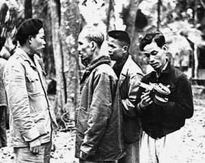
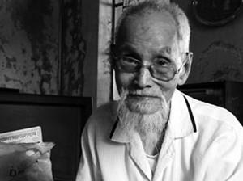
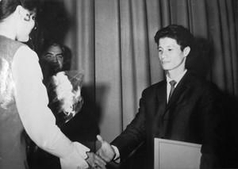

- Không hiểu sao tôi tin cậu, tôi tin là cậu đã quay thật, nhưng chúng ta không thể tráng được négatif AgFA color của Tây Ðức. Tôi đã làm mọi cách rồi. Bây giờ thì tôi không dám hy vọng nó sẽ trở thành phim mà chỉ cần nó có hình, đủ để minh oan cho cậu.
... Ngồi một lúc, chẳng biết đi đâu, chẳng biết Ban Tổ chức Trung ương, Ban Thống Nhất, Trạm đón tiếp ở đâu cả. Trong túi không có một xu, thân tàn ma dại. Ði không được vì yếu quá, mình cố lê đến chiếc ghế đá để ngồi.
☆
...Mình và Hằng biết nhau từ trước khi đi B, biết nhau trong tình bạn và cũng mến nhau. Giá như mình ở lại thì cũng có thể thân thiết, cũng có thể gắn bó rồi có thể thành vợ thành chồng. Mình kể tâm trạng mình như thế vì khi bị ném xuống công viên Thống Nhất, nhìn những đôi bạn trẻ đi chơi mà thấy chạnh lòng, thấy mặc cảm, tủi thân lắm.
Công viên Thống Nhất là nơi mình và Hằng đã đi chơi với nhau trước khi mình vào chiến trường. Vậy mà giờ phút này đây, thằng ăn mày cũng không thể bẩn thỉu hôi hám hơn mình được.
Trước khi đi, nói chính xác hơn là mình buộc phải đi B, mình đã nói với Hằng:
- Thôi em ạ, cái nơi anh đến bom đạn kinh khủng lắm. Mười người vào biết mấy người ra. Nhất là cái nghề của mình là quay phim, phải đứng lên mà quay chứ không thể đứng dưới hố, dưới giao thông hào được. Quay phim chết nhiều lắm, cho nên em đừng chờ anh. Chúng ta chia tay nhau, vĩnh biệt tại đây. Em có con đường của em, con gái có thì...
Nói thế rồi, mình còn viết một bức thư cho Hằng với nội dung như thế. Mình nhờ Ðặng Trần Sơn đưa đến tận nhà. Cái điều quan trọng nhất là mình không muốn để người con gái phải chờ đợi một cách vô vọng.
Sau đó lãng đi một thời gian, mình đi cũng lâu, mưa bom bão đạn...
Ðấy là lý do chia tay nhau. Nếu mình về lại còn cụt tay cụt chân thì lại càng không nên, ràng buộc nhau làm gì. Vậy thì khẳng định như thế cho yên một bề...
Chẳng ai hy vọng mình có thể sống sót trở về. Khi mình đi B, mẹ mình lo lắng, xót xa, thất thần đến nỗi đặt ấm nước lên bếp rồi bốc tro bỏ vào; nấu cơm thì bỏ gạo vào nồi, không cho giọt nước nào, cứ thế đặt lên bếp đun...
Anh Vĩnh mất đi rồi, mình là con trai trưởng, đi trong hoàn cảnh bố mẹ già, các em chưa đâu vào đâu. Phải cắn răng mà đi. Biết làm thế nào được. Cho nên mình không thích cái chuyện bây giờ cứ thổi phồng nó lên, tôi anh hùng, tôi căm thù, tôi quan điểm, tôi lập trường thế nọ thế kia. Nếu mình nói một cách thật thà, nói thẳng tuột những ý nghĩ của mình ra thì người ta nhìn mình bằng con mắt không bình thường...
Nhà bà chị mình ở phố Hòa Mã gần đây. Tốt nhất hãy về đấy đã. Chị Muội lấy chồng tên Mạc nên gọi là chị Mạc. Chị sinh năm 1939, hơn mình một tuổi, là con út của mẹ cả, em anh Vĩnh.
Trông thấy mấy ông xích lô, mình nghĩ, chưa chắc họ đã chở.
- Xích lô...
Anh ta nhìn mình chằm chằm rồi lẳng lặng đạp xe đi.
Một ông cao tuổi hơn đạp xe qua.
- Bác xích lô!
Ông ta nhìn do dự.
- Thưa bác tôi về phố Hòa Mã, nhà 52...
- Có tiền không?
- Chắc chắn là có. Ngay bây giờ tôi không có nhưng về đó gia đình tôi có. Gần đây thôi.
Mình bước lên định ngồi thì ông ấy vén manh chiếu lên. Khổ cái manh chiếu thì có sạch sẽ gì cho cam, mình ngồi vào cái phản gỗ không. Mông teo tóp gầy guộc trơ xương ngồi trên tấm gỗ, đường xóc, đau ê ẩm cả người.
Số nhà 52 đây rồi.
Mình trông thấy chị Mạc đang đi ngay bên trong hàng rào sắt. Mình gọi:
- Chị Mạc!
Bốn mắt nhìn nhau...
Chị không hề hỏi “ai đấy” hay gì đó mà lại lùi lũi đi vào nhà. Ông xích lô hỏi:
- Hay là anh nhầm?
- Không, chị tôi đấy mà! Bác ơi, bác làm ơn vào gõ cửa tử tế và gọi bà Mạc, bảo ra ngoài này có người nhà.
Ông xích lô làm đúng như thế.
Chị bước ra khỏi cổng hai ba bước rồi cứ đứng nhìn trân trân. Khi nhận ra thằng em, chị luống cuống, ông xích lô cũng chẳng biết phải làm gì. Chị đưa mình vào nhà, kéo cái phản ra cho mình nằm. Mình nhận ra đó là tấm câu đối của nhà, thời cải cách ruộng đất, sợ bị đấu tố, phải cưa ra làm phản để nằm, mặt bên kia vẫn còn chữ.
Anh Mạc đi vắng. Hai chị em mải nói chuyện, câu nọ xọ câu kia cũng đủ cho ông xích lô nghe thủng câu chuyện. Mình chợt nhớ ông xích lô vẫn chờ đó.
- Chị cho em ba hào trả bác xích lô.
- Tôi xin lỗi, tôi tưởng anh ấy ở trại cải tạo ra hay tù trốn, cho nên tôi không định chở. Bây giờ biết câu chuyện rồi thì tôi giúp thôi, tôi không cầm tiền đâu.
Nói thế nào ông ấy cũng không nhận rồi ông chào và thủng thẳng đạp xe đi...
- Em ở chiến trường ra, người ta thả em xuống công viên Thống Nhất. Chưa biết cơ quan ở đâu, chị cho em ở tạm đây để em tìm cơ quan...
Anh Mạc về.
- Ôi, sao thế này? Cho em nó đi tắm đi chứ!
Anh lấy ra hai bộ quần áo tốt nhất cho mình. Hồi đó mỗi người mỗi năm được mua 5 mét vải. Trên đời này mình chưa thấy ông anh rể nào tốt đến thế, từ xưa anh ấy đã vậy rồi. Sau này thầy mình đã trút hơi thở cuối cùng trên tay anh.
Anh Mạc lấy các hộp phim ra, còn những thức linh tinh, ống bơ, túi vải... ném ra xe rác hết. Anh nấu một nồi nước to như nồi luộc bánh chưng để mình tắm rửa và mặc quần áo mới.
Anh chạy sang Ban quản lý xe khách, cơ quan anh ở phố Ngô Thì Nhậm, phôn về Nam Ðịnh.
Thầy mình cao lớn, đến mét tám, giọng nói sang sảng, không mấy khi rỏ nước mắt. Ông từ Nam Ðịnh lên đi thẳng vào nhà con gái, trông thấy thằng con nằm đó, hai bàn chân trắng như tờ giấy. Ông quỳ xuống ôm hai bàn chân con trai và khóc...
Ðây là lần thứ hai trong đời mình thấy ông khóc; lần thứ nhất là khi ông ôm xác anh Vĩnh hôm anh chết trong trận càn 1949.
Thầy mình mất năm 1975, đến nay đã 37 năm rồi.
Phải liên hệ với cơ quan. Mình chẳng biết bắt đầu từ đâu. Anh Mạc lại phôn mấy nhát ra hết. Chưa đầy một tiếng sau, một chiếc com-măng-ca phóng đến.
Họ đưa thẳng mình vào Bệnh viện Việt-Xô. Từ phòng cấp cứu đến phòng tiếp máu, mình vẫn khư khư ôm túi phim. Hồng cầu hai triệu tám, nặng 42kg. Tiếp máu và truyền đạm ba tháng liền! Chữa chạy kéo dài nửa năm mới khôi phục được sức khỏe đến mức tàm tạm.
Ngay tức thời, từ bệnh viện mình nhờ liên lạc với Cục Ðiện ảnh về chuyện cuốn phim.
Về quản lý con người thì mình thuộc Ban Thống Nhất, chuyện phim ảnh thì Ban không biết mô tê ất giáp gì.
Nghe tin có phóng viên ở chiến trường ra, lại có phim chưa tráng, Cục cử người đến ngay. Có một nhân viên đến xin nhận phim, mình không giao; phải là người có trách nhiệm có chức danh. Không phải chuyện đùa bỡn.
Ông Nguyễn Thế Ðoàn đến. Ông là trùm về kỹ thuật in tráng, chỉ có thể giao cho ông mà thôi. Con người này mình không bao giờ có thể quên được. Ông người Nam bộ, là người đi đầu của đội ngũ điện ảnh cách mạng, nổi tiếng với những thước phim quay Ðại hội Ðảng lần thứ II tại Việt Bắc và những thước phim về cụ Hồ đi thăm dân công, thăm nông dân, cưỡi ngựa đi công tác, lội suối, băng rừng, tập võ, chơi bóng chuyền...
☆

Ông Nguyễn Thế Ðoàn (người cầm máy) những ngày ở Việt Bắc

và khi về già
Có nhiều câu chuyện thú vị, sinh động khi ông quay những hình ảnh này nhưng chưa mấy khi được kể lại. Những tư liệu hiếm hoi này được các thế hệ sau dùng tràn lan, ở mọi nơi, mọi lúc, mọi chương trình nhưng tên tuổi của ông thì ít người nhắc tới. Tháng 1-2009, ông đã được Nhà nước trao Huân chương Ðộc lập hạng nhì, sự vinh danh cho ông cũng muộn màng, không được rầm rộ, hoành tráng như khi vinh danh các nghệ sĩ sáng tác.
Khoảng những năm 90, mình có lần vào Vũng Tàu thăm ông. Người nghệ sĩ già nhìn ra biển, hàng giờ chẳng nói một câu...
☆
Hồi mình mang phim ra Bắc, có dư luận không tin những gì mình báo cáo. Người độc miệng bảo: Nó quay quắt gì đâu, bấm cho hết phim để chuồn ra Bắc chứ chẳng có gì trong đó cả. Chẳng ai tin được mình có thể quay được gì cho ra hồn, học hành dở dang, kinh nghiệm chẳng có, được bấm máy có hai lần; AgFA color là sao, ORWO color là sao, còn mù tịt!
Sau khi hỏi han kỹ lưỡng về các vấn đề kỹ thuật, về nguồn gốc phim, ông dặn mình:
- Yên tâm mà điều trị, việc tráng phim tôi sẽ cố gắng lo!
Mình không hiểu được sự băn khoăn trong ông. Tráng phim là chuyện bình thường trong nghề, nhất là với bậc “sư phụ” như ông thì có gì mà phải “cố gắng”.
Ông Ðoàn mang về tráng thử. Mình đã đánh dấu sẵn đoạn phim có thể lấy ra để thử.
Lần đầu ông chỉ thử một đoạn hai mươi phân, tức là chỉ tráng trong lọ, trong bát, trong chậu...
- Thủy ơi, có điều đáng mừng là phim rất nét và không bị mốc! Nhưng không ra màu.
- Anh xem giúp em, nói thật, anh không tráng được là em đi đời nhà em. Họ không tin là em đã quay!
Ông Ðoàn chỉ biết ậm ừ.
Hồi đó đã có lệnh, phim đem vào chiến trường không được để cả bành to 300 mét mà phải san ra, sạc vào hộp thành những bô-bin nhỏ 30 mét để lắp vào máy quay, tránh sau này phải chui hầm ẩm ướt mà làm.
Phim của mình đã quay là phim AgFA color, lắp trong những hộp đẹp đẽ chính xác và đúng chuẩn mực. Và thế là họ có ý định bỏ phim đã quay của mình ra để lấy hộp sạc phim sống gửi vào chiến trường!
Ông Ðoàn xót quá. Ông bảo, nhiều người nói với ông rằng thằng Thủy chẳng quay được gì đâu, đừng tráng mất công.
Ông vào bệnh viện nói với mình:
- Tôi nghĩ nó phải có cái gì đó cho nên tôi quyết tâm tráng. Nhưng cậu quay bằng AgFA color, phải tráng theo cách đặc biệt. Cậu đào đâu ra số phim này? Có bao giờ ngoài này gửi vào đâu, và có bao giờ ta dùng AgFA color đâu! Ta chỉ dùng ORWO color, mà trong chiến trường chỉ quay đen trắng, có bao giờ quay màu đâu?
- Anh ơi em có biết gì đâu, vào đấy làm nương làm rẫy, rồi xin đi quay. Họ giao cho phim máy thì cứ thế quay, có biết AgFA với ORWO là cái gì đâu!
Ông Ðoàn bảo AgFA là phim của Tây Ðức, ORWO là phim của Ðông Ðức và ta chỉ tráng được ORWO thôi!
...Thế là suốt một thời gian dài đến hơn ba năm, qua cả Mậu Thân 1968, lặn lội ghi hình trong bom cày đạn xới, ác liệt triền miên mà đến bây giờ mình mới biết một điều tối thiểu, tối quan trọng như thế!
Nghĩ lại, nếu dạo đó mà biết trước được rằng những cuộn phim mình cõng trên vai, dấn thân trong bom đạn, nắn nót chắt chiu từng hình, từng cảnh cuối cùng sẽ không tráng được thì liệu mình có đủ máu me, đủ sự liều lĩnh để quay những cận cảnh chiến sự, xe tăng, bộ binh trong đó cả cảnh máy bay bổ thẳng nhào vào ống kính như đã có ở trên phim hay không?
Chắc chắn không!
Nằm trong bệnh viện, mình bần thần nhớ lại chuyện vừa qua. Khi ấy, quay xong phim, thì ốm thập tử nhất sinh do bệnh tật, đói khát, kiệt sức và được điều ra Bắc. Ðứng không vững, đi không nổi, nhưng trên vai vẫn nguyên vẹn từng ấy hộp phim négatif AgFA color và vẫn yên chí rằng đây sẽ là bộ phim màu đầu tiên của Ðiện ảnh khu 5.
Cay đắng quá.
☆
Liền ba tháng trời ông Ðoàn đánh vật với đống phim của mình mang ra, nhưng không tài nào tráng nổi.
Tin được loan báo ra gần như chính thức rằng: Trần Văn Thủy là một kẻ lừa dối, có quay quắt gì đâu, chiến trường ác liệt quá thì bấm đại cho hết cơ số phim được giao và... “B quay” (chuồn ra Bắc). Vào thời điểm đó “B quay” là tội lớn nhất, lại phí phạm bấm đại cho hết cơ số phim quí được giao thì chắc chắn đi tù.
Thời điểm đó để tin vào nhau cũng khó, lấy gì làm bằng chứng mà tin? Bởi vậy điều khốn khổ đối với mình trong những ngày nằm tiếp máu, chạy chữa ở Bệnh viện Việt-Xô là làm sao chứng minh được là đã quay thật, quay rất công phu, với sự hy sinh, công sức và xương máu của rất nhiều người.
Một buổi chiều vào giờ thăm bệnh nhân, ông Ðoàn lại vào bệnh viện thăm mình.
Ông là người hiểu hơn ai hết cái sự nguy hiểm nếu như đống phim của mình mang ra không tráng được. Ông bảo:
- Không hiểu sao tôi tin cậu, tôi tin là cậu đã quay thật, nhưng chúng ta không thể tráng được négatif AgFA color của Tây Ðức. Tôi đã làm mọi cách rồi. Bây giờ thì tôi không dám hy vọng nó sẽ trở thành phim mà chỉ cần nó có hình, đủ để minh oan cho cậu.
Mình lo sợ và buồn nát ruột nát gan. Suốt thời gian đó, tuy được bệnh viện thuốc men, bồi dưỡng nhưng mình cứ gầy rộc đi, đêm không ngủ được. Mình lo sợ nếu ông Ðoàn nản chí, cuộc đời mình rồi đây sẽ ra sao.
Ông Ðoàn mầy mò mấy tuần, trực tiếp tìm tòi, ông pha một bài thuốc khác, đóng guồng gỗ để tráng thủ công.
Một hôm ông bảo:
- Thủy ơi đành tráng đen trắng thôi, tráng inversif, có nghĩa là tráng trực hình, ra dương bản luôn.
☆
Tôi bảo Thủy :
- Bây giờ cái cần nhất không phải là hoàng hôn tím, lá dừa xanh, lửa đỏ, cỏ úa mà là “đen trắng” - đen trắng cho rõ ràng, nghĩa là thằng Thủy quay thật sự, không quay bậy! Ðen trắng là quan trọng nhất bây giờ.
Sác lô “chơi” đen trắng, Võ An Ninh “chơi” đen trắng...Cái đó ông hiểu hơn tôi! Yên tâm đi!
Tuy ông Ðoàn tính toán là vậy, dự định là vậy rồi cũng phải mấy tháng sau kể từ ngày mình ôm đống phim ấy ra đất Bắc thì ông mới thực sự bắt tay vào tráng những mẻ đầu tiên.
☆
Sau này mình mới hiểu inversif là hai lần lộ sáng, một lần là lộ sáng khi quay phim, sau đó tráng bằng một bài thuốc gì đó rồi cho ra ngoài lộ sáng lần hai, rồi đưa vào buồng tối chạy qua thuốc, lúc đó mới hiện ra positif .
Nhưng có thể những người giúp việc cho ông Ðoàn nghĩ đó là những tư liệu không có hình hoặc không giá trị cho nên làm ẩu, lộ sáng lần hai chưa đủ thời gian, chưa thành positif . Kết quả là có nhiều chỗ đáng đen thì trắng và ngược lại, như bầu trời đen, cây dừa trắng, máy bay trắng, ngoài ra nhiều cảnh còn chớp chớp...
☆
Tôi chọc Thủy:
- Nghệ sĩ chơi đen trắng thì nhiều, nhưng lại “chớp chớp” nữa thì trên thế giới này chỉ có Trần Văn Thủy! Bản quyền đấy!
Mình được gặp ông Ðoàn cũng là lần đầu được quen biết, không thân thiết, không ân huệ, không đi tìm danh lợi gì mà sao ông đắm đuối với công việc, lo cho mình đến thế. Mình biết, ngoài trách nhiệm rất bản năng của ông đối với công việc, đối với những thước phim sinh ra trong máu lửa, bom đạn ngày ấy, ông còn nặng lòng thương mình, thương mình đã lăn lộn những năm ác liệt ở chiến trường; thương mình gầy gò, ốm yếu, bệnh tật, đang nằm chạy chữa ở bệnh viện và mong tin ông từng ngày.
Ông là người tin rằng “phim sẽ có hình” và hơn ai hết ông hiểu rằng nếu không tráng được mớ phim négatif này thì chắc chắn “tác giả” của nó sẽ bị rơi vào vòng lao lý. Thời điểm đó đã có những ứng xử không bình thường với mình về mặt chính sách đối với một người từ chiến trường trở về. Lúc đi, lương 52 đồng, lúc về thân tàn ma dại, sau hơn bốn, năm năm trời bom đạn vẫn 52 đồng.
Mình chỉ còn biết khắc khoải chờ tin từ phòng in tráng của ông...
☆
Thế rồi một hôm ông Ðoàn nhắn vào:
- Thủy ơi đã có kết quả, cậu đến xem.
Ông cho người đón mình từ bệnh viện đến thẳng số 42 Yết Kiêu, trường Ðại học Mỹ thuật nơi Hãng phim Giải phóng làm việc. Mình nhớ buổi xem nháp hôm đó có cả ông Hà Mậu Nhai - Giám đốc Hãng phim Giải phóng.
Mình nói thật, xem phim, mình choáng váng, chết lặng người.
Mình ơn ông Ðoàn không biết để đâu cho hết, tuy nhiên hình ảnh và chất lượng khác rất xa những gì mình tưởng tượng khi ghi hình: Ðâu rồi những cảnh chân trời bầm tím sau những rào thép gai của đồn bốt, đâu rồi những cảnh cây lê ki ma bị cháy nửa vàng nửa xanh, đâu rồi những hàng dương xanh mướt, những con sóng bạc đầu...
Có phải công lao của một mình mình đâu!
Những người trong phim có đến hàng trăm, may lắm có hai người còn sống! Ðó là cô Văn Thị Xoa ở huyện Duy Xuyên và một cô ở văn công. Còn thì chết cả rồi. Anh Hy phóng viên nhiếp ảnh chuyên đưa mình đi thời kì đầu cũng chết. Anh Tý tiếp tục hướng dẫn mình, lăn lộn bao ngày nay đây mai đó, hết lòng với cuốn phim, anh pha sữa với bia cho uống khi mình đau bụng, cõng phim giúp mình cũng chết.
Tất cả nhân vật trong phim đều do anh dẫn mình đi tìm gặp chứ mình biết ai vào ai! Biết ở đâu có chuyện gì! Nhờ anh ấy mà mình biết những con người, những thân phận để đưa vào phim thành câu chuyện... Mình âm thầm chịu ơn anh ấy và nghĩ rằng nếu cuốn phim ra được thì chắc chắn phải đề tên anh là đồng tác giả. Nhưng trong hoàn cảnh gian nan ác liệt như thế, chắc gì đã thành phim mà nói trước! Mình chỉ giữ ý nghĩ đó trong đầu. Nói độc miệng, mà chắc gì phim đã còn, mình đã còn!
Khi mình ra Bắc, một trong những động lực làm cho ra cuốn phim là món nợ với bà con trong kia, đặc biệt là với anh Tý (Triều Phương)...
☆
...Trong khi mình chán nản rã rời thì ông Hà Mậu Nhai tỏ ra phấn khích đặc biệt. Ông nhìn mình bằng con mắt thân thương và động viên:
- Hãy dựng đi, tiếp tục đi!
Sau này chính ông đã góp công sức để bộ phim ấy được đến bờ đến bến.
Ông Ðoàn thì vẫn trầm tư chẳng nói một câu.
☆
Thế là được cứu thoát khỏi tội danh “lừa dối”, tội danh “B quay”. Tuy nhiên, hình ảnh là một sự thất vọng lớn, tất nhiên về mặt kỹ thuật mà thôi.
Mình ngồi vào bàn dựng, cũng vẫn ở 42 Yết Kiêu, trường Ðại học Mỹ thuật. Thoạt đầu mình loại bỏ toàn bộ những cảnh hỏng, những cảnh giống như négatif , bị chớp nháy. Lòng đau như cắt.
Ông Ðoàn suy nghĩ rất nhiều, sau vài ngày ông bảo mình:
- Thủy ạ, những cảnh tráng hỏng mà cậu loại ra ấy, tôi có một cảm giác rất lạ!
Mình chợt giật mình vì nhận xét của ông. Sau vài ngày đêm bị ám ảnh, bị giày vò vì tiếc nuối, thế rồi theo gợi ý của ông Ðoàn, mình quyết định dựng những cảnh hỏng ấy vào một trường đoạn chiến sự ác liệt.
Quả là ấn tượng không ngờ.
Phim dựng xong và ra bản đầu.
Buổi chiếu ra mắt diễn ra ở 22 Hai Bà Trưng. Có mặt nhạc sĩ Phan Huỳnh Ðiểu, ông Hà Mậu Nhai, ông Khánh Cao (thân sinh nghệ sĩ điện ảnh Trà Giang) và những anh em làm Ðiện ảnh, Văn nghệ khu 5.
Xem xong tất cả đều bị choáng!
Họ không tưởng tượng được, một cuốn phim lạ lùng như thế. Kẻ vô nghề vô nghiệp như mình, chưa biết mặt phải mặt trái cuốn phim ra sao mà trồng ngô trồng sắn kiếm ăn, tự biên kịch, đạo diễn, quay phim, tự đào hầm bí mật, đào hố giấu phim, rồi tự cõng phim trở ra Bắc giao cho Cục Ðiện ảnh!
Thế mà thành phim thật sự!
Và được giải quốc tế!

... “Những Người Dân Quê Tôi” quay ở chiến trường ra dự thi tại Liên hoan phim Leipzig 1970.
Tấm thân còn gầy tong teo lên nhận giải Bồ Câu Bạc...
Sau này, trong Liên hoan phim quốc tế, ông Roman Karmen, khi ấy là thành viên Ban giám khảo, có hỏi mình rằng: “Những cảnh như âm bản, chớp chớp bão bùng ấy là chủ ý làm kỹ xảo hay vì in tráng hỏng?”.
Mình đành phải kể thật sự tình. Ông Karmen bảo: “Chính những cảnh hỏng ấy đã gây ấn tượng đặc biệt cho ban giám khảo”.
Vào thời điểm ấy mình làm sao mà tưởng tượng được rằng hai năm sau đó mình được là học trò trực tiếp của Roman Karmen trong 5 năm ở trường Ðại học Ðiện ảnh Quốc gia Toàn Liên bang ở Matxcova!
☆